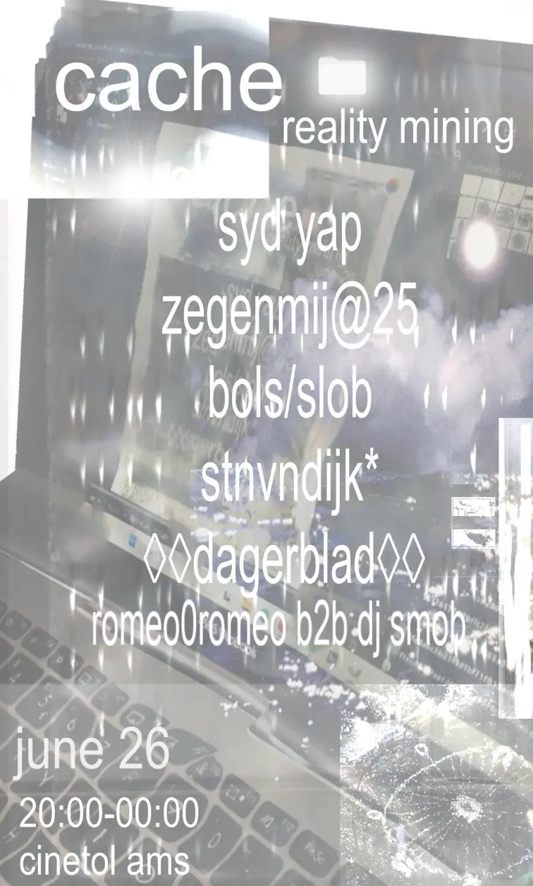

Cache: Reality Mining
A night of local and international experimental electronic artists, somewhere between hyperpop, experimental club music and leftfield folk-pop, inspired by the esoteric internet: digicore, the 2012–2016 internet aesthetic, Frutiger Aero and digital mysticism.
2025

Cache: Reality Mining
I did the live visuals for a line-up of Syd Yap, zegenmij@25, bols/slob, stnvndijk*, ◊◊dagerblad◊◊ and romeo0romeo b2b DJ Smob.